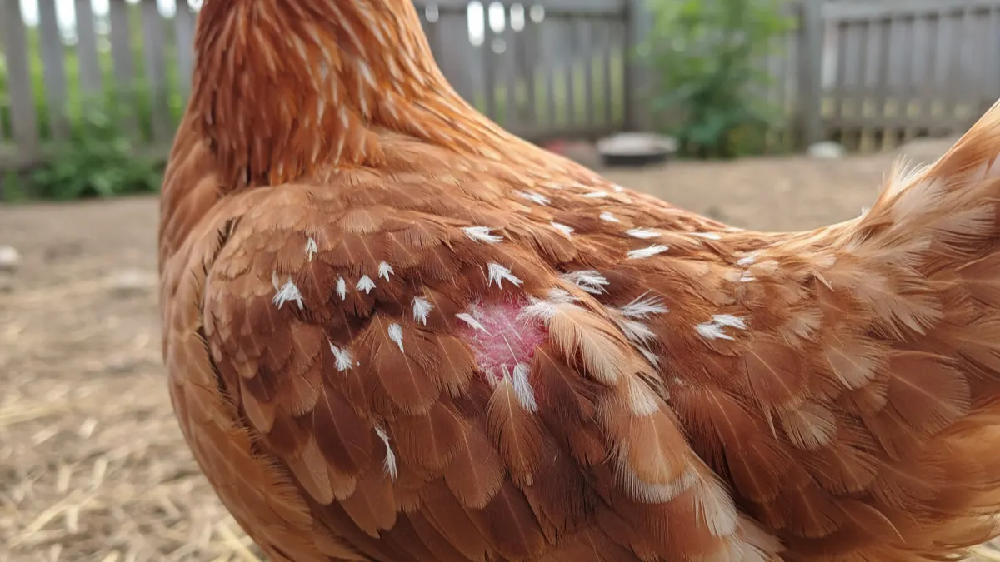

Tavuklarda tüy dökümü (molt) normal mi? Verim neden durdu?
Sonbaharda tavuklar tüy döküyor, folluk boşaldı diye telaşlanma. Molt mu, bit mi, hastalık mı; nasıl ayırırsın ve döküm dönemini kayıpsız nasıl atlatırsın?

Eylül sonu, telefon çalar. "Hocam tavuklar bir garip oldu, her yer tüy, folluk bomboş, yoksa hastalık mı kaptılar?" Bu soruyu her sonbahar en az on kişiden duyarım. Çoğu zaman cevap tek kelime: molt. Yani doğal tüy dökümü. Panik yapıp antibiyotik atmaya, vitamin bombardımanına başlamadan önce iki dakika dur ve tavuğa doğru bak. Çünkü molt ile hastalığı, molt ile biti karıştıran adam parasını da sürüsünü de yakar.
Bu yazıda molt tam olarak nedir, neden sonbaharda başlar, yumurta kaç hafta durur, normal döküm ile bit veya stres kaynaklı tüy kaybını nasıl ayırırsın ve bu dönemi en az kayıpla nasıl geçirirsin, hepsini konuşacağız. Sahada gördüğümü anlatacağım, kitaptan değil.
Molt nedir, tavuk neden tüy döker?
Molt, tavuğun eski, yıpranmış tüylerini atıp yerine yenisini çıkardığı doğal yenilenme dönemidir. Bir yıl boyunca o tüyler güneşte, yağmurda, gagalamada yıpranır; yalıtım özelliğini kaybeder. Kışa girmeden tavuk kendini yeni bir tüy paltosuyla donatır. Yani molt aslında kışa hazırlıktır, hastalık değil bereket işaretidir.
Asıl tetikleyici gün uzunluğu. Yaz dönümünden sonra günler kısalmaya başlar, tavuğun beynindeki ışık saati bunu okur. Günlük ışık 12-13 saatin altına inince yumurta hormonları geri çekilir, vücut enerjisini tüy yapımına kaydırır. İşte bu yüzden molt çoğunlukla ağustos sonu ile kasım arasında, en yoğun eylül-ekimde görülür. Bölgeye ve ırka göre birkaç hafta oynar.
Bir tavuk genelde ilk molt'unu 15-18 aylıkken, yani ilk yumurtlama sezonunu kapattıktan sonra yaşar. Sonra her yıl tekrarlar. Yani sürünün yaşını biliyorsan, döküm seni şaşırtmamalı.
Molt döneminde yumurta neden durur, kaç hafta sürer?
Tüy yaklaşık %85 proteindir. Yumurta akı da protein. Tavuğun vücudu ikisini aynı anda tam kapasite yapamaz; sınırlı kaynağı tüye kaydırınca folluk boşalır. Bu bir arıza değil, öncelik değişimidir. Kısa bir molt'ta verim yarıya iner, sert bir molt'ta tamamen durur.
Süre tavuğun karakterine bağlı. Erken molt yapan ve uzun süren tavuklar aslında kötü yumurtacılardır; "hızlı molt yapıp çabuk işe dönen" tavuk ise iyi verimlidir. Kaba bir çerçeve vereyim:
| Molt tipi | Süre | Verim durumu | Ne anlama gelir? |
|---|---|---|---|
| Hızlı (kısa) molt | 4-6 hafta | Kısmen düşer | İyi yumurtacı, verimli sürü |
| Yavaş (uzun) molt | 8-12 hafta | Tamamen durur | Zayıf yumurtacı, ayıklama adayı |
| Geç başlayan molt | Kışa sarkar | Uzun süre durur | Yaşlı sürü, verim ömrü dolmuş olabilir |
Ortalama bir sürüde folluğun 6-8 hafta ciddi düşük gitmesi normaldir. Bu dönemde "tavuğum boşuna yem yiyor" deyip elden çıkarma. Molt biter, tüyler tamamlanınca yeni ve daha kaliteli bir yumurta sezonu başlar; hem de kabuk daha sağlam olur. Verimin ne zaman biteceğini merak ediyorsan yumurtacı tavuğun verim ömrü yazısındaki yaş tablosuna bak, molt mu yaşlılık mı ayırt edersin.
Normal molt mu, hastalık mı, bit mi? Ayrım tablosu
İşin can alıcı noktası bu. Tüy kaybının üç ana sebebi var: doğal molt, dış parazit (bit-akar), ve stres/hastalık. Üçünün görüntüsü farklıdır, ayırt etmesini bilirsen doğru müdahaleyi yaparsın.
Normal molt düzenli ve simetriktir. Genelde baştan başlar, boyna iner, oradan sırta, kanatlara ve en son kuyruğa geçer. Sağ ile sol birbirine benzer. Deri temiz ve pembedir, kaşıntı yoktur, tavuk keyiflidir, yemini yer. Altta yeni tüylerin kalem gibi çıktığını görürsün.
Bit veya kırmızı akar kaynaklı tüy kaybı ise düzensizdir. En çok kloak (dip) çevresinde, kanat altında ve göğüste toplanır. Tavuk huzursuzdur, sürekli gagasıyla kaşınır, tüy diplerini karıştırır, geceleri rahatsızdır. Tüy diplerini araladığında küçük hareket eden bitleri ya da tüy köküne yapışmış beyaz sirke yumurtalarını görürsün. Bu bir yenilenme değil, işgaldir; mücadelesini tavuklarda bit ve kırmızı akar yazısında adım adım anlattım.
| Belirti | Normal molt | Bit / akar | Stres / hastalık |
|---|---|---|---|
| Dökülme deseni | Baş-boyun-sırt-kanat-kuyruk sırayla, simetrik | Kloak, kanat altı, göğüs; düzensiz | Ani, bölgesel, gagalanan yerler |
| Kaşıntı | Yok | Şiddetli, sürekli gagalama | Değişken |
| Deri görünümü | Temiz, pembe, yeni tüy kalemleri | Kızarık, tahrişli, sirkeli | Yara, kanama olabilir |
| Genel hal | Keyifli, yem yiyor | Huzursuz, kilo kaybı | Halsiz, ishal, solunum belirtisi |
| Mevsim | Sonbahar ağırlıklı | Her mevsim, sıcakta artar | Her an |
Stres kaynaklı döküm de vardır: su kesintisi, yem değişimi, aşırı sıcak, yırtıcı korkusu, ani nakil. Tavuk şok yaşayınca birkaç günde tüy bırakabilir ve yumurtayı keser. Bir de birbirini gagalayıp tüy yolan sürüler var; o zaman döküm değil, kanibalizm devrededir. Sıklık, ışık, protein açığı sebep olur; çözümünü gagalama ve kanibalizm yazısında ele aldım. Yumurta düşüşünün molt dışındaki gizli sebeplerini de yumurta verimini düşüren kümes hataları yazısında topladım; sonbahar dışında verim düştüyse oraya bak.
Molt döneminde bakım: protein, sakinlik, ışık
Molt'u hızlandıramazsın ama kolaylaştırabilirsin. Üç şeye dikkat: yem, huzur, ışık.
Protein artışı. Tavuk tüy yaparken bol protein ister. Normal yumurta yeminde %16-17 ham protein bulunur; molt döneminde bunu %18-20'ye çıkarmak dökümü hızlandırır, yeni tüyü sağlamlaştırır. Ekstra olarak ayçiçeği küspesi, mercimek, ıslatılmış nohut, biraz balık unu ya da kaynatılmış yumurta (evet, kabuklu ezip verebilirsin) iyi gelir. Metiyonin ve sistin denen kükürtlü aminoasitler tüyün ana maddesidir; ticari tüylenme premiksleri bunu içerir.
Sakinlik. Molt'taki tavuğun derisi hassastır, yeni çıkan tüy kalemleri kanla doludur, dokununca acır. Bu yüzden bu dönemde sürüyü sıkıştırma, yeni tavuk katma, nakil yapma. Kalabalık ve stres dökümü uzatır. Yeni yarka almayı düşünüyorsan molt bitene kadar bekle; kaynaştırma zaten zor, bir de bu döneme denk getirme. Yarka katarken nelere dikkat edeceğini yarka alırken dikkat edilecekler yazısında yazdım.
Işık. Doğal molt gün kısalmasıyla gelir. Suni ışıkla verimi zorla ayakta tutmak yerine molt'un doğal seyrini bırak, ama ışığı ani ani açıp kapatarak sürüyü şaşırtma. Molt sonrası verimi toparlamak için ışığı kademeli 14-15 saate çıkarabilirsin. Işık programının inceliklerini kümes aydınlatması ve ışık programı yazısında anlattım.
Bir de kalsiyum meselesi. Molt biter bitmez yumurta akışa geçtiğinde kabuk kalitesi düşükse, dinlenme döneminde kalsiyum depoları boşalmıştır. İlk yumurtalarda ince kabuk görürsen şaşırma; sebeplerini ve çözümünü yumurta kabuğu neden incelir yazısında bulursun.
Zorlamalı (force) molt: yapmalı mı?
Büyük entegre çiftliklerde sürüyü tek elden, kısa sürede molt'a sokup topluca yeni sezona geçirmek için zorlamalı molt uygulanır. Yöntem sert: ışığı kısarlar, yemi birkaç gün ciddi kısıtlarlar, tavuğu şoklayıp tüm sürüyü aynı anda döktürürler. Amaç sürüyü senkronize etmek ve ikinci verim sezonunu düzenli almaktır.
Küçük ve orta ölçekli üreticiye bunu tavsiye etmem. Yem kısıtlama hayvan refahı açısından tartışmalı, yanlış uygulanırsa ölüm ve hastalık getirir. 100-2000 tavuklu bir işletmede doğal molt zaten işini görür; sürünü aç bırakıp riske atmana gerek yok. Sadece protein ve ışığı yönet, gerisini mevsime bırak. Zorlamalı molt bilgi ve ekipman ister; heves edip evde denemeye kalkma.
Molt döneminde kümes şartları ve kışa hazırlık
Molt sonbahara denk gelir, arkasından kış gelir. Tüyü seyrelmiş bir tavuk soğuğa daha açıktır. Bu dönemde kümesin sıcak, kuru ve akımsız olması kritik. Nemli ve cereyanlı bir barınakta tüy döken tavuk kolay üşütür, solunum hastalığına yakalanır. Kışa hazırlığı kışın kümes nasıl sıcak tutulur yazısındaki yoğuşma-havalandırma dengesine göre yap.
İşte tam bu noktada barınağın tipi devreye giriyor. Yalıtımsız bir sundurmada molt dönemine giren tavuk hem üşür hem verimi geç toparlar. Yalıtımlı bir barınakta ise iç sıcaklık dengeli kalır, tavuk enerjisini üşümeye değil tüy yapmaya harcar.

750 Tavukluk Tavuk Çadırı
Molt sonrası tüyü henüz tamamlanmamış sürünü kışa sokacaksan, 3-4 kat yalıtımlı 750 tavukluk çadır iç ısıyı dengede tutar; tavuk üşümekle uğraşmayınca tüyünü çabuk çıkarır, folluk erken dolar.
Barınak kararı verirken maliyeti de tartmak istersen kümes maliyeti: betonarme mi çadır mı karşılaştırmasına göz atabilirsin. Molt, sürünün sağlığını okuduğun bir aynadır aslında. İyi bakılan, yeri düzgün, yemi denk bir sürü molt'u hızlı atlatır ve sana daha güçlü tüyle, daha sağlam kabukla döner.
Son olarak şunu aklında tut: sonbaharda tüy görünce koşup ilaç kutusuna sarılma. Önce tavuğun dibine bak, deri temiz mi, kaşınıyor mu, döküm düzenli mi? Cevap "temiz, sakin, sırayla" ise oturup çayını iç; sürün sadece kışlık paltosunu değiştiriyor. Sen ona bol protein ve sıcak bir dam ver, gerisini o halleder.
Sık sorulanlar
Tavuklar sonbaharda tüy döküyor, hasta mı oldu?
Molt döneminde yumurta kaç hafta durur?
Molt ile bit kaynaklı tüy kaybını nasıl ayırırım?
Tüy dökümü döneminde tavuğa ne vermeliyim?
Zorlamalı (force) molt evde uygulanır mı?
Molt sonrası verimi hızlandırmak için ne yapabilirim?
Projenizi birlikte planlayalım
Kapasitenizi ve bölgenizi yazın; ölçü ve teklifi birlikte çıkaralım.
Kapasitenizi yazın